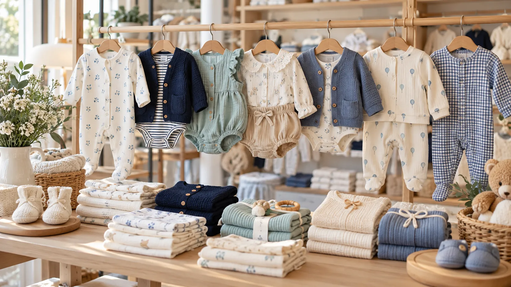
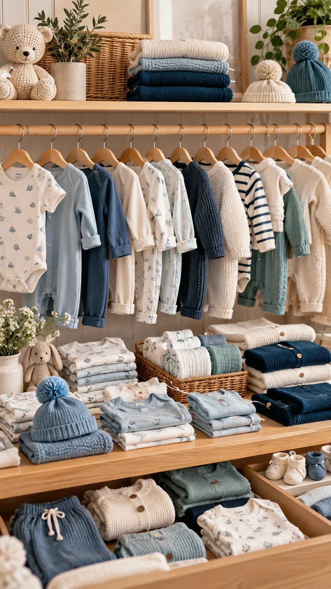

Ropa para bebés talles 0 a 6
Ropa de bebé para cada etapa, del talle 0 al 6
Bodies, enteritos, saquitos tejidos y vestidos para sus primeros años. Elegí el talle, sumalo al carrito y comprá desde acá.
Comprá por talle
Talles 0, 1, 2, 3, 4, 5 y 6
Cuatro colecciones para sus primeros años
Ver todo el catálogoLos favoritos de la casa

Kukin baby
Pequeños momentos, grandes historias
En Kukin baby vas a encontrar ropa de bebé pensada para el día a día: bodies, enteritos, tejidos y vestidos en talles del 0 al 6, con colores suaves que combinan entre sí.
Elegí por colección o por talle, armá tu carrito y, si tenés dudas con la medida, escribinos por WhatsApp antes de comprar.
- 0–6Talles en todas las colecciones
- 5Colecciones, de recién nacido a accesorios
Lo nuevo en el ropero
Ver todo¿Qué talle le queda?
Tocá un talle y te mostramos la edad y las medidas orientativas, con las prendas que tenemos en ese talle.
Medidas orientativas: cada bebé crece a su ritmo. Si está entre dos talles, conviene elegir el más grande.
Del talle 0 al 6, todo en un mismo ropero
- 1Elegí la prenda y el tallePor colección, por talle o con el buscador.
- 2Sumala al carritoArmá todo el pedido en un solo carrito.
- 3Finalizá tu compraY si tenés dudas, te respondemos por WhatsApp.